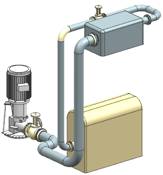

打开 rtg1_design_rules。

这个装配与您前面添加部件与型材所使用的装配类似。
选择信息→管线布置→应用模块视图。
在信息窗口中，点击编辑→查找。
在查找内容：输入框中，键入：
|
用户首选项 |
点击查找下一个，然后点击取消。
在用户首选项下方，影响这个装配中的管线布置对象的两个最关键的设计规则为：
ROUTING_MIN_BEND_RADIUS_COEFF 以及 ROUTING_MIN_STRAIGHT_LENGTH_COEFF |
第一个规则定义的是折弯段最小半径，该用户首选项值为“1”，即路径中的任何折弯段的半径至少为型材外径的一倍。
第二个规则控制的是路径中线性管线段的最小长度，该用户首选项值为“10”，即路径中的直线段长度至少为型材外径的十倍。
选择信息→管线布置→设计规则。
将会在信息窗口中显示当前 NX 会话与设计规则兼容性的完整列表。
关闭信息窗口。
|
提示 |
要获取关于设计规则的详细信息，参见在线帮助中的CAD→Routing Systems→Routing→Common Routing tools→Design Rules。 |